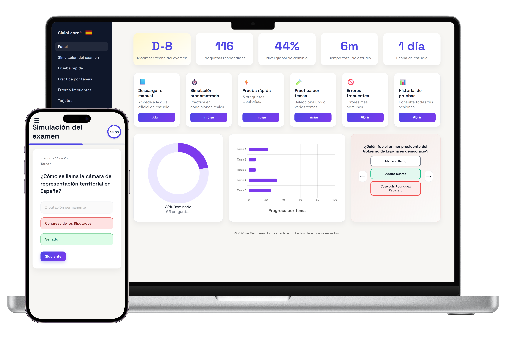

Prueba CCSE: Prepárate online de forma clara y eficaz
Preguntas de práctica basadas en los contenidos oficiales del examen CCSE. Estudia con confianza y supera la prueba en tu primer intento.

Fuente: Instituto Cervantes
¿Necesitas también el DELE A2?
Para obtener la nacionalidad española por residencia se exigen dos pruebas: el DELE A2 (examen oficial de idioma) y el CCSE (la prueba que preparas en esta plataforma).
Si necesitas las dos: nuestro producto DELE A2 incluye la preparación para el CCSE sin coste adicional — 69 € en total, una sola plataforma para ambos exámenes.
Si solo necesitas el CCSE — por ser nacional de un país hispanohablante, haber estudiado en España, ya tener un DELE A2 o por exención reconocida — estás en la página correcta. Continúa abajo.
Todo lo que necesitas para aprobar
Pruebas de práctica, simulacros de examen y explicaciones claras.
Contenido alineado con el CCSE
Preguntas basadas en los contenidos oficiales del examen CCSE, que cubren Constitución, cultura, sociedad e instituciones de España.
Simulacros de examen
Pruebas cronometradas con corrección inmediata y criterios realistas, para detectar puntos débiles y seguir tu progreso.
Confianza el día del examen
Prepara los temas clave a tu ritmo, reduce el estrés y acude al examen CCSE con seguridad y preparación.
Prueba preguntas reales del examen CCSE gratis
Descubre el formato y el nivel de dificultad.
Todo incluido
Pagas una vez y practicas todo lo que necesites.
Empezar ahoraSin suscripción · Activación inmediata
Qué incluye
- Banco completo de preguntas CCSE
- Simulacros de examen con formato oficial
- Práctica por temas
- Seguimiento de preguntas falladas
- Estadísticas detalladas de progreso
- Lectura de preguntas en audio
- Tarjetas de estudio (flashcards)
- Guía de estudio
- Funciona en móvil, tablet y ordenador
- Práctica diaria
- Activación inmediata tras el pago
Personas que prepararon el examen CCSE con la plataforma
“La práctica regular marcó una gran diferencia. El día del examen ya conocía el tipo de preguntas y me sentí mucho más tranquilo y seguro.”
“Las preguntas organizadas por temas sobre Constitución, instituciones y cultura española me ayudaron a detectar mis puntos débiles y centrar el estudio. Plataforma muy clara y eficaz.”
“Utilicé la plataforma unas semanas antes del examen. Las explicaciones y los simulacros me dieron la estructura que necesitaba para prepararme en serio.”
Más reseñas de CivicLearn en Trustpilot.
¿Necesito también el DELE A2?
Para la nacionalidad española por residencia se exigen dos pruebas: el DELE A2 (examen de idioma del Instituto Cervantes, nivel A2 del Marco Común Europeo) y el CCSE (la prueba que preparas en esta plataforma).
Estás exento del DELE A2 si te encuentras en alguno de estos cuatro casos:
- Eres nacional de un país hispanohablante (Argentina, Bolivia, Chile, Colombia, Costa Rica, Cuba, Ecuador, El Salvador, Guatemala, Guinea Ecuatorial, Honduras, México, Nicaragua, Panamá, Paraguay, Perú, República Dominicana, Uruguay o Venezuela).
- Has cursado estudios oficiales en España (primaria, secundaria, FP o universidad).
- Tienes una discapacidad reconocida que te exime del examen.
- Ya tienes un diploma DELE A2 o superior — el diploma DELE no caduca.
Si encajas en alguno de esos casos, esta plataforma es lo que necesitas: prepárate para el CCSE y sigue con tu expediente. Si no encajas en ninguno, también vas a necesitar el DELE A2 — en ese caso, nuestro producto DeleA2.org incluye la preparación para las dos pruebas en un único pago de 69 €.
¿Cuánto tiempo dura el acceso?
El acceso es ilimitado. Pagas una sola vez y puedes volver a practicar siempre que lo necesites.
¿Son estas las preguntas oficiales del examen CCSE?
Sí. Las preguntas corresponden al banco oficial del examen CCSE publicado por el Instituto Cervantes y vigente para la convocatoria 2026.
¿Existe una lista oficial de preguntas para memorizar?
Sí. El examen CCSE se basa en un conjunto oficial de preguntas, que se practican íntegramente en la plataforma.
¿Cómo me ayuda la plataforma a prepararme?
Mediante práctica por temas, repetición de preguntas, simulacros de examen y seguimiento del progreso, refuerzas tu conocimiento y aumentas tus probabilidades de aprobar.
¿Necesito instalar alguna aplicación?
No. La plataforma funciona directamente en el navegador, tanto en móvil como en tablet u ordenador.
¿Y si no tengo tiempo para estudiar todos los días?
Las sesiones cortas de práctica y el historial de progreso te permiten avanzar de forma constante, incluso con poco tiempo disponible.
¿Listo para aprobar el CCSE?
Preguntas de práctica, simulacros con el formato real y estadísticas de progreso en un solo lugar. 9 €, una sola vez.
 Windows
Windows
 macOS
macOS
 Android
Android
 iPhone / iPad
iPhone / iPad
 Chrome
Chrome
 Safari
Safari
 Firefox
Firefox